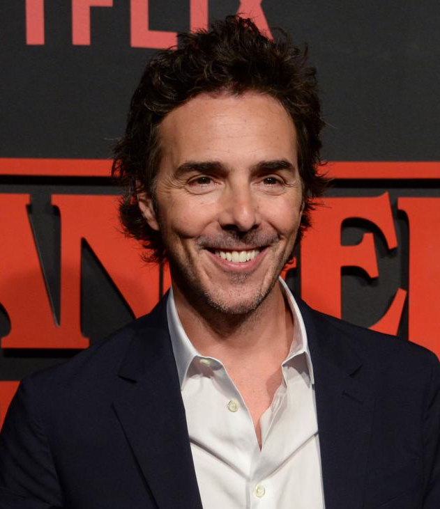

DIRECTOR
[========>Shawn Levy<=======]

¿Quien es?
Shawn Adam Levy (Montreal, 23 de julio de 1968) es un director de cine, productor y actor canadiense que ha llevado a la gran pantalla películas como Gordo mentiroso (2002), Recién casados (2003), Doce en casa (2003), La pantera rosa (2006), Noche loca (2010), Acero puro (2011), Los becarios (2013) o la trilogía de películas Noche en el museo. Recientemente ha producido la serie Stranger Things para el servicio de streaming Netflix.
[========>Biografia<=======]
Levy nació en Montreal, Quebec, en el seno de una familia judía. Durante su adolescencia asistió a St.George's High School of Montreal y al campamento de artes escénicas Stagedoor Manor de Nueva York, graduándose en 1989 como alumno de artes escénicas por la Universidad de Yale. Casado con Serena Levy, tienen cuatro hijos en común.1
En 2005 fundó la productora 21 Laps Adelstein que, posteriormente se encargaría de producir alguno de los trabajos del director. En 2011, la productora de Levy se encarga de llevar a la cadena de televisión estadounidense ABC la sitcom Uno para todas protagonizada por Tim Allen y Nancy Travis. Inicialmente propuesto por Warner Bros como director de la película basada en el popular videojuego Minecraft,2 meses después Levy abandonó el proyecto para centrarse en otros trabajos.3
Su faceta como actor inició en la película Zombie Nightmare (1986), una producción de terror de bajo presupuesto donde interpretó a Jim Bratten, el líder de un grupo de adolescentes. Esta película es más conocida por su aparición en uno de los capítulos de la serie estadounidense Mystery Science Theater 3000. Levy también apareció en Liberace: behind the music (1988), así como en diversas series de televisión como Jóvenes policías, Beverly Hills, 90210 y, más recientemente en Rockefeller Plaza dando vida al productor de televisión Scottie Shofar.
Por si quieres ver mas sobre el
CLICK AQUI .
Para VOLVER